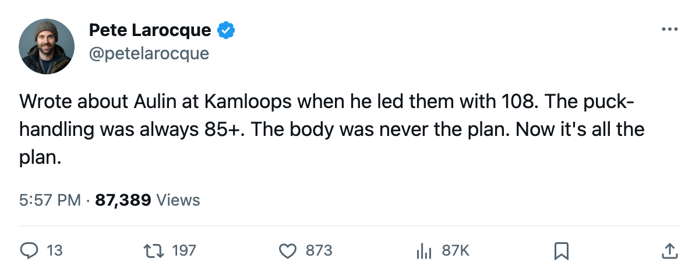
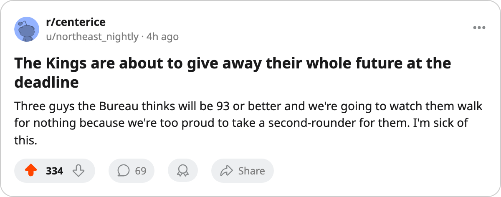

3 Players, 93+ Potential, 0 Years Left: The Window Closing on Los Angeles
The Kings hold the league's cheapest young core on paper. None of them signed past this year, and the calendar has the trade deadline 87 days out.
 Pete LarocqueScouting editor · The Prospect File
Pete LarocqueScouting editor · The Prospect File
 Los Angeles Kings sit last in the Pacific with 22 points, a 6-18-6 record, and 2 goals against fewer than the next club up. They also hold three players under 24 with potential grades of 93, 95, and 97. All three carry contracts that expire after this season.
Los Angeles Kings sit last in the Pacific with 22 points, a 6-18-6 record, and 2 goals against fewer than the next club up. They also hold three players under 24 with potential grades of 93, 95, and 97. All three carry contracts that expire after this season.
That is the problem in Los Angeles: the scouting department keeps finding bodies, and the business side has no reason to pay for them.
| player | draft | overall | base | Index | potential | gp | pts | mpg | salary |
|---|---|---|---|---|---|---|---|---|---|
 Mike Cammalleri83 Mike Cammalleri83 | 2001 #49 (R2) | 87 | 79 | +10 | 97 | 13 | 11 | 21.8 | $1.10M |
 Alexander Frolov75 Alexander Frolov75 | 2000 #20 (R1) | 79 | 77 | +4 | 95 | 32 | 14 | 21.9 | $1.10M |
| Jared Aulin73 | 2000 #47 (R2) | 75 | 71 | +8 | 93 | 15 | 3 | 8.5 | $0.90M |
The Cammalleri problem
He went 49th in the second round of the 2001 draft and the Bureau still thinks he is a 97. His base grade sits at 79; the Development Index has pushed him to 87, which ties him with  Adam Deadmarsh83 and
Adam Deadmarsh83 and  Zigmund Palffy83 as the second-best player on the roster. He has 11 points in 13 games at 21.8 minutes a night.
Zigmund Palffy83 as the second-best player on the roster. He has 11 points in 13 games at 21.8 minutes a night.
Cammalleri has played 13 games because something keeps stopping him, and his $1.10M deal has no years left on it. Any club at the trade deadline gets a player the Book thinks will be a 97 for a second-round pick at best, because the Kings cannot argue they want him back on the same money.
Frolov, the one who plays
Alexander Frolov has 32 games, 14 points, and 21.9 minutes a night. His overall is 79, his potential is 95, and the Index has him only +4 above his base. He is the most established of the three, and he is the one most likely to walk because he is the only one the Kings might think they can re-sign.
A club with a 95 potential and a 79 overall at 23 years old does not come back at $1.10M. You find out at free agency what the market says.
Aulin, the grades that do not fit the body
I saw him at Kamloops. 108 points in 70 games, the team lead, and he was 19 years old. Colorado took him 47th in 2000. The Avalanche traded his rights to the Kings for Rob Blake in March 2001 and it took me two years to believe the deal was good for Los Angeles.
The numbers today say it might have been. His puck handling is 88. His deking is 83. His faceoffs and passing sit at 83 each. Those are the grades of a second-line center. His fighting grade is 51.
Two injuries have cost him this season. An arm problem between mid-March and early April, and a rib issue between late October and the first week of November. He has 15 games, 3 points, and 8.5 minutes a night. A 23-year-old with a 93 potential and an 88 on the puck cannot play 8.5 minutes unless the body is the whole story, and it is.
His contract is $0.90M with 0 years left. That number will not follow him to a contender. A team rebuilding around picks will take a shot on the puck-handling at whatever a cheap deal looks like. The Kings will collect the return or lose him for nothing.
87 days to get something
The Kings hold 5 picks in the 2006 draft, 1 of them a first. That is a league-average allocation. If they move Cammalleri, Frolov, and Aulin at the deadline, they could turn three expiring deals and three contracts worth $1.10M, $1.10M, and $0.90M into draft capital a team at 22 points should be stacking.
If they do not, all three walk in July. The Bureau prints 97, 95, and 93 on their potential grades. Teams pay for that kind of upside, and giving it away for nothing is not a decision the scouting department made.

